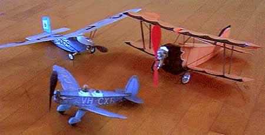

George built this model from original plans drawn from a three view. Power changes from time to time, but is usually close to a 16" loop of 0.080 Tan II, spinning a 6" peck prop. The 16 3/4" span peanut scale model (9" fuse) started life at 19 grams and has flown 73 seconds at the Cow Palace in San Francisco. Next is the McMahon biplane. An obscure 1920 homebuilt, this model was built from a peanut plan labled "Alger". There are no know color notes, so George "took liberties" and created the scheme we see above, Power for the prototype was a vtwin motorcycle engine. The model flies with a red North Pacific prop, reworked a bit, fed by a 12" loop of 0.10". The McMahon is a bit finicky. Indeed, it often changes direction between flights, if not while airborne! This makes judging the distance to the wall tough at launch, though the model is holding up well. Yesterday, Oct.18, 1998, it was a bit better behaved, staggering about for a bit over 30 seconds. The Nickel scale Ryan from Comet plans spans 10". In flight it exhibits none of the usual vices, and flies beautifully. The prop is lightened silver Pecks 4", power is a 10" loop of 0.45". Especially nice are twin launches with Jason McGuire's Nickel Ryan. |
Copyright 1998 - 2016, Thayer Syme. All rights reserved